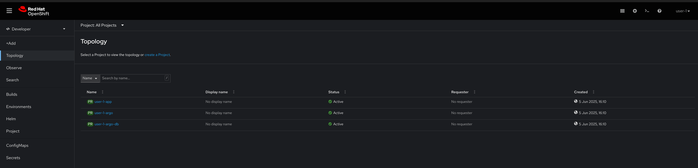

Entorno del Hackathon Todas las aplicaciones y servicios que vais a necesitar para afrontar los retos que se van a plantear ya han sido desplegados y configurados. A continuacion se indica como acceder, credenciales y algunos consejos. Recomendamos ir accediendo a medida que reviseis los componentes para asegurarnos que todo esta configurado correctamente. Repositorio de Código Gitea es una plataforma web de software colaborativo para alojar el control de versiones de desarrollo de software utilizando Git. Incluye otras funciones colaborativas como seguimiento de errores, revisión de código, tableros kanban, tickets y wikis. Para este Hackathon se ha desplegado una instancia en la que tendreis ya creado un repositorio llamado demo-app-%ID%. Este repositorio se encuentra la aplicacion que utilizareis durante el hackathon. Figure 1. Ejemplo repositorio El acceso a Gitea se realiza a traves del botón Repositorio situado en la barra de menu superior, al lado derecho. Vuestros credenciales para acceder a Gitea son: Usuario: %USER% Contraseña: hack-%USER% TODO: info repo IDE web Creado sobre el proyecto de código abierto Eclipse Che, Red Hat OpenShift Dev Spaces utiliza Kubernetes y contenedores para proporcionar a los desarrolladores y otros miembros del equipo de IT un entorno de desarrollo consistente, seguro y sin configuración. La experiencia es tan rápida y familiar como un entorno de desarrollo integrado (IDE) en un portátil. El motivo por el que vamos a utilizar DevSpaces como IDE es para poder garantizar el acceso a todos los recursos y sistemas con los que interactuareis durante el Hackathon. El acceso a DevSpaces se realiza a traves del botón IDE situado en la barra de menu superior, al lado derecho. Seguid los siguientes pasos para acceder al entorno de desarrollo: Pulsar log in with OpenShift: Seleccionar ocp-hackathon: Acceder con los siguientes credenciales: Usuario: %USER% Contraseña: hack-%USER% Marcar user:full y pulsar en Allow selected permissions: Una vez en la pagina de inicio, en la seccion Import from Git pegar la url del repositorio de trabajo (https://gitea-gitea.apps.%SERVER%/gitea/demo-app-%ID%) y pulsar Create & Open En el waring "Do you trust the authors of this repository?" marcar Do not ask me again for other repositories y pulsar en Continue: Una vez cargado el entorno de desarrollo podreis ver que vuestro proyecto %USER%-hackathon ya esta clonado y listo para empezar a trabajar con él. Si vuelve a pedir confiar en los autores del repositorio, confirmar. Red Hat OpenShift OpenShift es una plataforma de contenedores desarrollada por Red Hat que facilita el despliegue, gestión y escalado de aplicaciones. Basada en Kubernetes, añade multiples herramientas y una interfaz gráfica que simplifican mucho la vida de los equipos de desarrollo y operaciones. Con OpenShift puedes: Desplegar aplicaciones rápidamente, ya sean contenedores propios o imágenes de catálogo. Gestionar recursos (como bases de datos) y configuraciones de forma centralizada y segura. Automatizar despliegues, actualizaciones y gestión de permisos. Supervisar el estado y rendimiento de tus aplicaciones desde una consola web intuitiva. En resumen, OpenShift te permite centrarte en el desarrollo y la entrega continua de aplicaciones, sin preocuparte por la infraestructura subyacente. Para este Hackathon se va a utilizar un cluster en el que ya se han creado y configurado 2 namespaces que se utilizarán durante los diferentes ejercidios planteados: %USER%-app: para el despliegue a traves de la consola %USER%-argo: para el despliegue a traves de ArgoCD Revisad que los namespaces descritos anteriormente estan creados y los veis con vuestros credenciales (abajo)  Figure 2. Home AAP El acceso a OpenShift se realiza a traves del botón OpenShift situado en la barra de menu superior, al lado derecho. Vuestros credenciales para acceder a AAP son: Usuario: %USER% Contraseña: hack-%USER% ArgoCD ArgoCD (OpenShift GitOps) es una herramienta de entrega continua (CD) para Kubernetes. Permite automatizar el despliegue de aplicaciones usando el concepto de GitOps: tu infraestructura y configuración viven en un repositorio Git, y ArgoCD se encarga de que lo que está en Kubernetes siempre refleje lo que está en ese repositorio. Con ArgoCD puedes: Desplegar aplicaciones automáticamente al detectar cambios en el repositorio. Visualizar y gestionar el estado de tus despliegues desde una consola web sencilla. Recuperar rápidamente el estado deseado si hay cambios no autorizados en el entorno. Para este Hackathon dispondreis de acceso a una instancia de ArgoCD desplegada en el mismo cluster donde se va a realizar el hackathon. En dicha instancia tendreis lo permisos necesarios para poder crear y gestionar aplicaciones en los namespaces asignados a cada usuario en OpenShift. Figure 3. TODO El acceso a ArgoCD se realiza a traves del botón ArgoCD situado en la barra de menu superior, al lado derecho. Seguid los siguientes pasos para acceder a ArgoCD: Pulsar LOG IN VIA OPENSHIFT: Seleccionar Hackathon: Acceder con los siguientes credenciales: Usuario: %USER% Contraseña: hack-%USER% Marcar user:full y pulsar en Allow selected permissions: Se accede a ArgoCD (sin ninguna aplicacion creada): 1. Configuración Inicial 3. Demo App